referendums/referenda
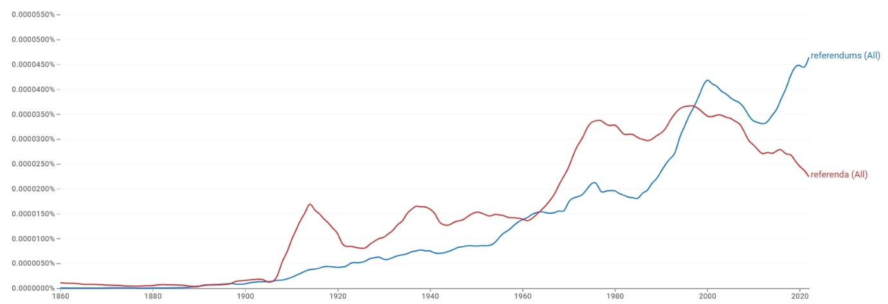
결론
referenda와 referendums는 의미 분화를 통해 공존하는 관계라기보다, 동일한 정치적 의미 영역을 두고 경쟁하면서도 서로 다른 담화 환경에 배분되는 사례다. referenda는 제도적·법률적·학술적 텍스트에 상대적으로 강하게 남고, referendums는 동시대 정치 이슈와 결합하며 뉴스·대중 담론의 중심 형태로 확장된다. 따라서 공존 → 우세 전환 → register 분화에 속한다.
연구 결과
과정 및 결론 도달 과정 · 사용 도구
1차 Ngram 사용량 그래프로 초기 고전형 우세와 이후 규칙형 추월(공존)을, 2차 같은 그래프로 규칙형이 점진적으로 증가하며 우세 전환된 경로를 읽었다. 3차는 Ngram 연어(형용사·명사 모두 거의 동일)와 COCA 맥락 분석(고정적 제도 표현 vs 유연한 동시대 결합)으로 레지스터 분화를 해석했다.
세부 정보 · 구간 별 분절
초기에는 고전형 referenda가 우세한 시기가 길게 이어지며 20세기 초반·1970년대 전후 상승한다. 규칙형 referendums는 20세기 초부터 완만히 증가해 후반으로 갈수록 확대되며, 1990년대 후반~2000년대 전후 referenda를 추월하고 21세기 들어 격차를 더 벌린다. 현재 두 형태는 공존하되 균형은 규칙형 쪽으로 기운다.
초기에 곧바로 대체된 것이 아니라, 규칙형의 사용량이 점진적으로 증가하며 그 우세가 전환된 우세 전환의 경로다.
형용사 연어는 national, constitutional, local, popular, public 등으로 거의 동일하고, 명사 연어에서도 주제적 분화가 뚜렷하지 않다(state, bond, voter, tax 공유). 다만 referenda는 initiatives and referenda 같은 고정적 제도 표현으로 반복되는 반면, referendums는 independence, devolution 등 특정 시기의 핵심 쟁점과 유연하게 결합한다. COCA에서 referenda는 학술지·격식 언론의 문어적 레지스터와 화석화된 제도 표현에, referendums는 동시대 쟁점·은유적 용법(elections are referendums on…)·유연한 결합에 분포한다. 의미가 아니라 담화 환경이 갈리는 register 분화다.
referenda는 법률·정치학·제도적 텍스트에 상대적으로 강하게 남아 있는 반면, referendums는 동시대 정치 이슈와 결합하며 뉴스와 대중 담론의 중심 형태로 자리 잡아, 두 형태가 서로 다른 담화 환경에 배분되었다.
참조 이미지
연어 그래프 · COCA 맥락 캡처 펼치기
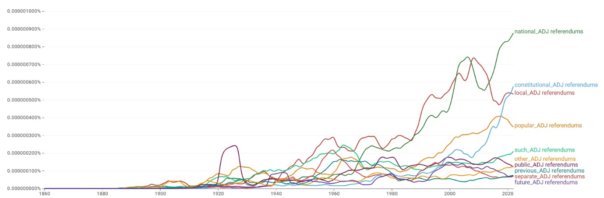
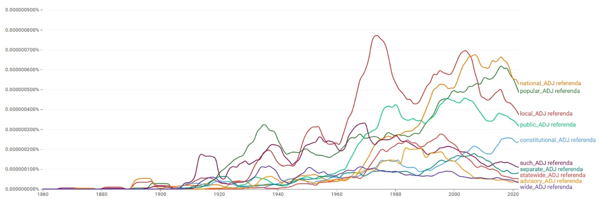
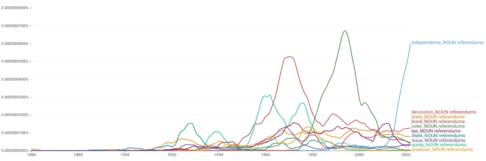
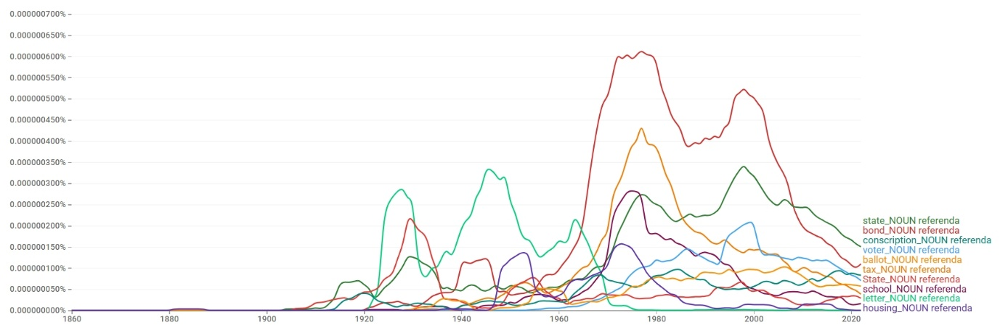
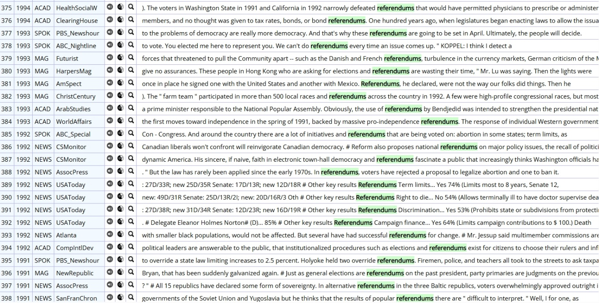
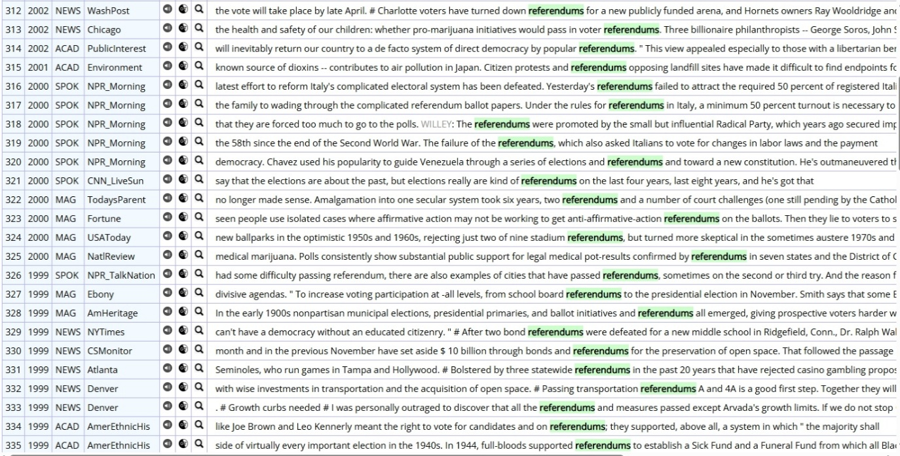
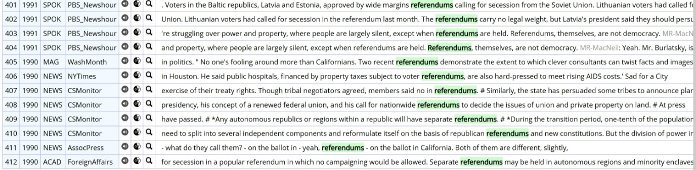
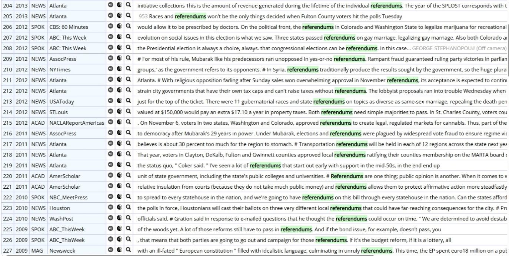
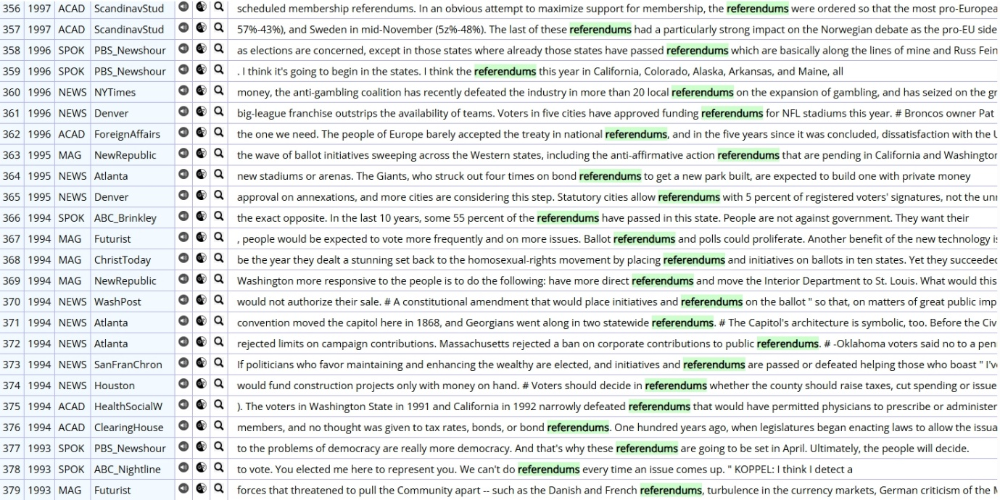
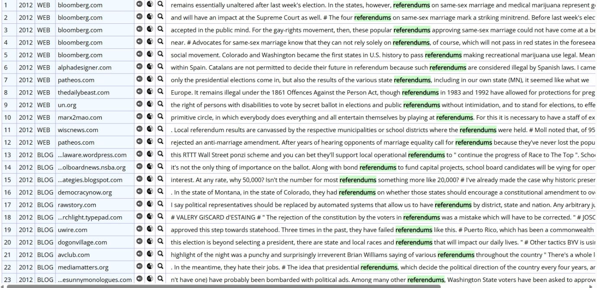
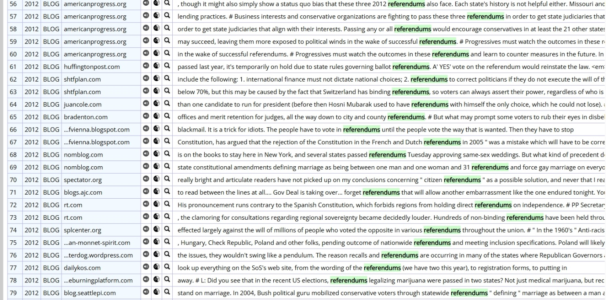
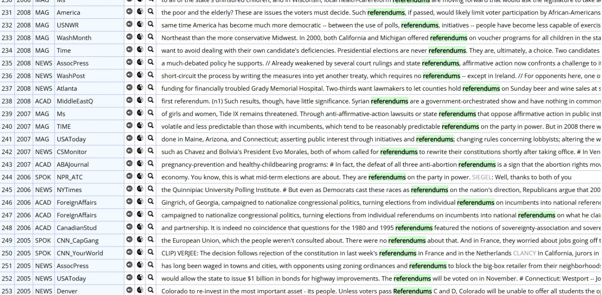
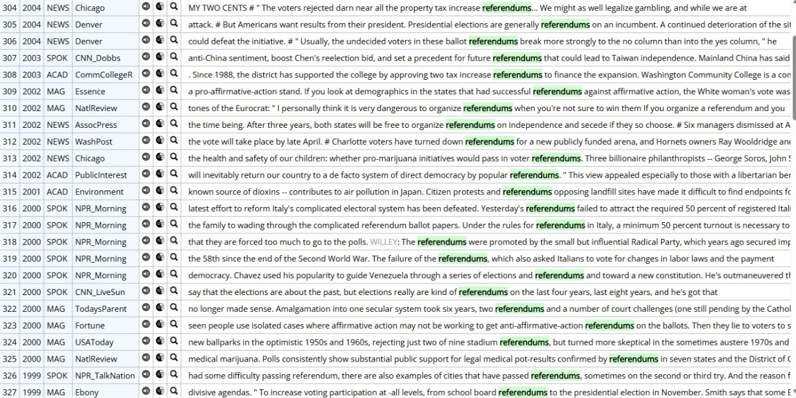
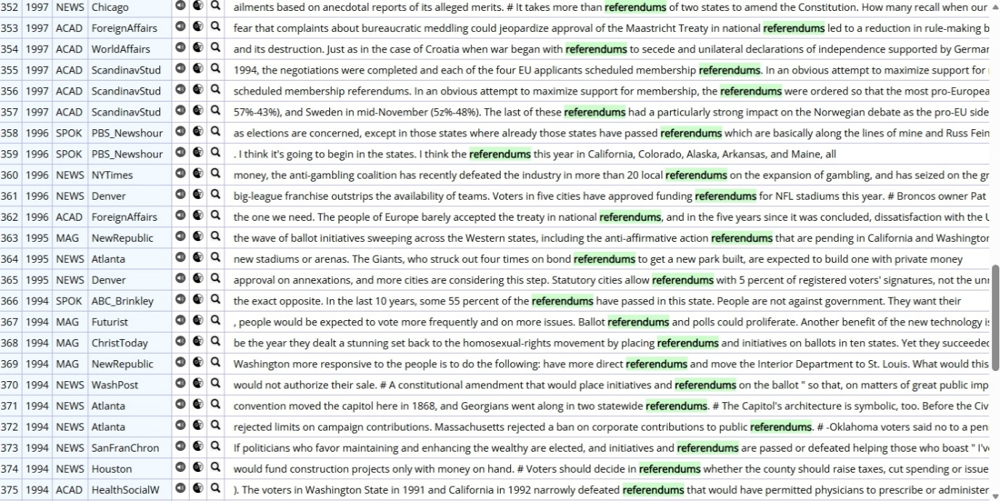
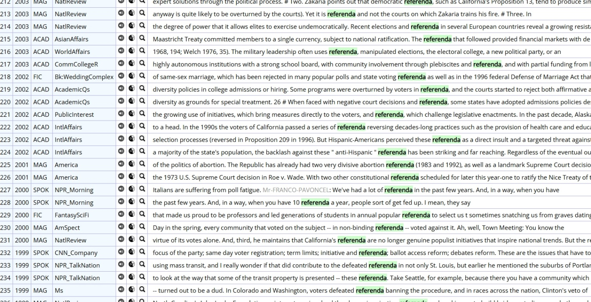
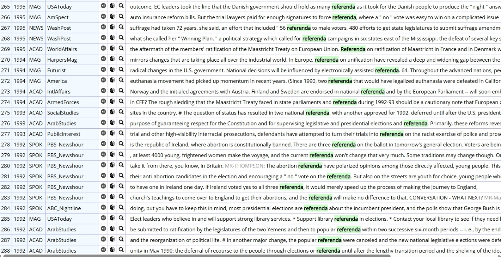
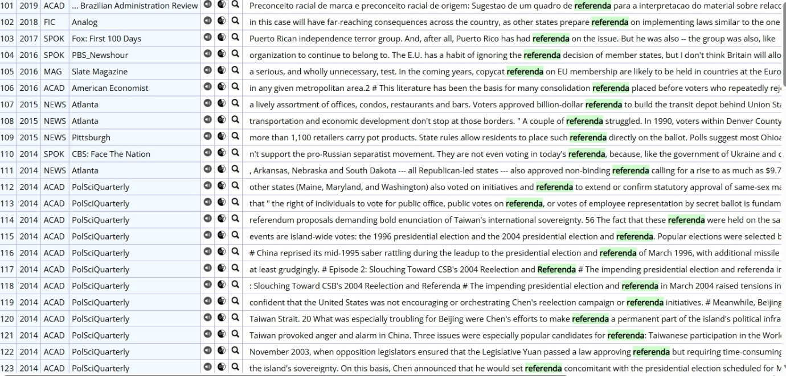
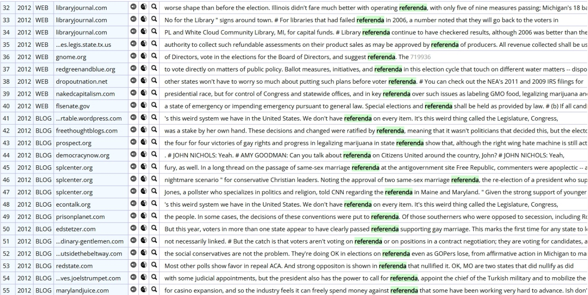
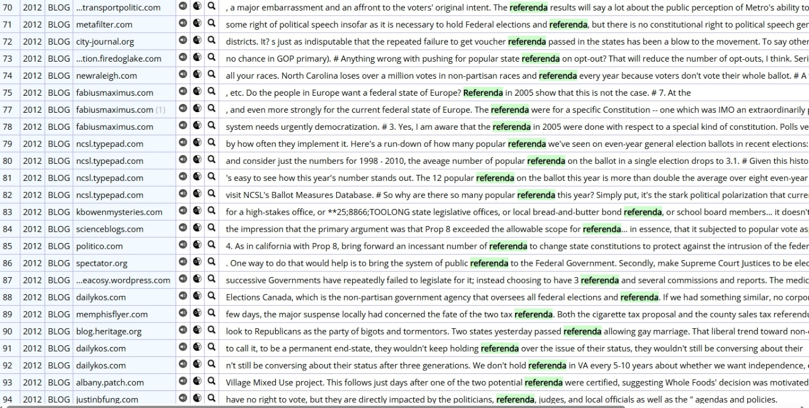
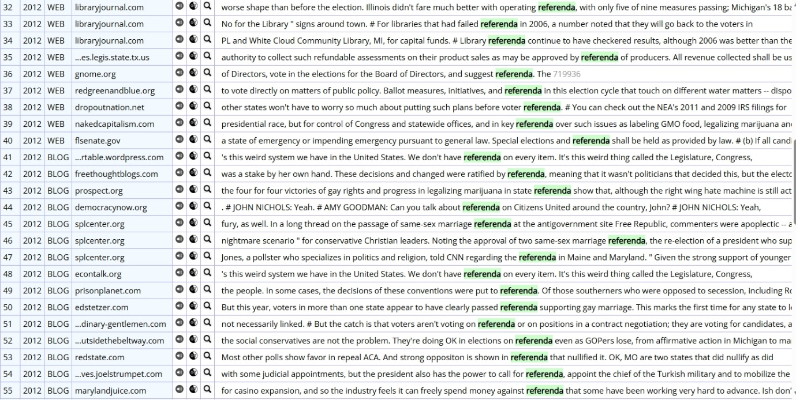
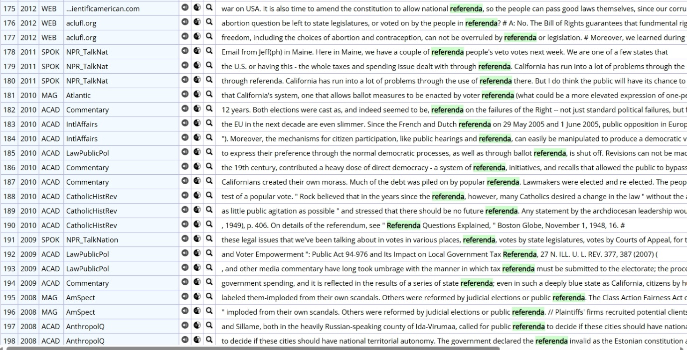